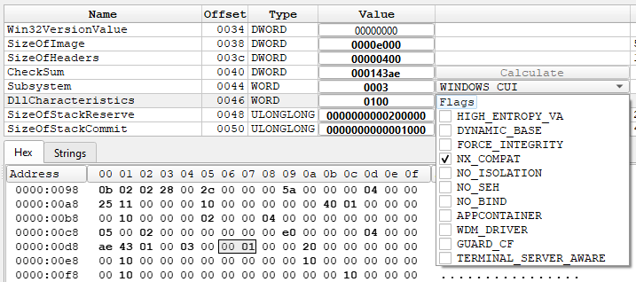
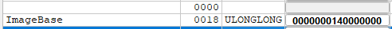

Payload
You’ve completed Training Day — congrats, rookie. Now the real game begins. An unmarked binary just landed on your desk. It’s acting shady, tripping a few alarms, but no one's sure what it really is. Malware? Or just a misunderstood piece of code? Your mission: reverse-engineer the program, trace its behavior, and uncover the truth. Every line of code could be a clue—or a trap. Welcome to your first real case.
Task 1
What is the SHA256 hash of func_pointer.exe?
I will perform the analysis on a Windows VM. To get the SHA256 hash of the executable, I will upload it to VirusTotal.
The SHA256 hash of this executable is edd41b4a819f917f81203424730aaf0c24cc95e40acfc0f1bd90b11dadf58015
Task 2
What compiler is being used?
I'll check the file with DIE(Detect It Easy), as it does a great job of displaying certain information, like the compiler that was used.
This time, the compiler was not shown. It could be because the malware wasn't compiled from a high-level language like C, but rather written in Assembly itself, and then assembled and linked using the GNU toolchain.
In my experience, the compiler I've most often used to compile Windows executables on Linux was MingW or MingW-w64. MingW was the correct answer to this question.
Task 3
What is the compilation date?
Still in DIE, I clicked the PE information button. This leads to a different window, which contains information about file headers, sections, and many useful views.
The TimeDateStamp header contains the compilation date, but this one is a bit skewed due to different timezone settings on my VM. To get the UTC date, I'll just add 5 hours to the date.
Task 4
Is ASLR enabled?
ASLR (Address Space Layout Randomization) is a security technique used to protect against exploitation of memory vulnerabilities. It works by changing the base address of the program each time it is executed, which makes exploitation harder, as the offsets need to be dynamically calculated from a randomized base address.
In DIE, this can be checked in the PE information window, under the DllCharacteristics header, in the IMAGE_OPTIONAL_HEADER section.

The DYNAMIC_BASE flag is not checked, meaning that ASLR is disabled for this program.
Task 5
What is the image base address?
In the same section, I can see a few more interesting things, including the image base address.

If ASLR were active, this value would be disregarded. Since it is off, this will always be the base address of this program.
I can remove the unnecessary leading zeros, which will result in the address of 0x140000000
Task 6
What is the entry point?
The entry point is the address of the first instruction that will be executed when the program starts. In DIE, this value is listed under the AddressOfEntryPoint header.
Note that it is the relative virtual address of the entry point, not the raw offset in the file. Knowing both the ImageBase and the Relative Virtual Address, I can calculate the absolute Virtual Address of the entry point.
0x140000000 (ImageBase) + 0x1125 (RVA) = 0x140001125 (VA)
This is very useful when debugging, as knowing the VA would allow me to place breakpoints correctly and trace the program execution from the beginning.
Task 7
What are the first 8 bytes of the encrypted payload that is being moved to allocated memory? (format: daffd563616c632e)
I opened the malware in IDA, and browsed through the functions, eventually stopping at sub_140001D97
__int64 sub_140001D97()
{
void *v0; // rsp
HMODULE ModuleHandleA; // rax
HMODULE v2; // rax
char v4[8]; // [rsp+30h] [rbp-30h] BYREF
__int64 v5; // [rsp+38h] [rbp-28h]
unsigned int v6; // [rsp+44h] [rbp-1Ch]
char *v7; // [rsp+48h] [rbp-18h]
__int64 v8; // [rsp+50h] [rbp-10h]
unsigned int v9; // [rsp+58h] [rbp-8h]
int v10; // [rsp+5Ch] [rbp-4h]
sub_140001FD7();
v10 = 8;
v9 = 336;
v8 = 335LL;
v0 = alloca(sub_140003570());
v7 = v4;
sub_1400017D0((unsigned int)aUuuuuuuu, v10, (unsigned int)&unk_140004040, v9, (__int64)v4);
v6 = 0;
v5 = 0LL;
v6 = sub_1400019B5("explorer.exe");
ModuleHandleA = GetModuleHandleA("kernel32.dll");
qword_1400090E0 = (__int64 (__fastcall *)(_QWORD, _QWORD, _QWORD))GetProcAddress(ModuleHandleA, "OpenProcess");
v2 = GetModuleHandleA("kernel32.dll");
qword_1400090B0 = (__int64 (__fastcall *)(_QWORD))GetProcAddress(v2, "CloseHandle");
if ( v6 )
{
v5 = qword_1400090E0(1082LL, 0LL, v6);
if ( v5 )
{
sub_140001BA9(v5, v7, v9);
qword_1400090B0(v5);
}
}
return 0LL;
}
There are a few interesting things here. sub_1400019B5 is responsible for dynamically looking through the active processes list and finding explorer.exe. This is a prime target for process injection, because it is always running and a trusted system process.
sub_1400017D0 takes a key (a1), encrypted data (a3), and their lengths, and performs a byte-by-byte XOR decryption using a generated keystream.
Back in the 1D97 func, I clicked on the weird aUuuu string to see the data around it.

This is the the beginning of the allocated memory section, judging by the description above:
.data:0000000140004000 ; Section 2. (virtual address 00004000)
.data:0000000140004000 ; Virtual size : 000002B0 ( 688.)
.data:0000000140004000 ; Section size in file : 00000400 ( 1024.)
.data:0000000140004000 ; Offset to raw data for section: 00003000
.data:0000000140004000 ; Flags C0000040: Data Readable Writable
.data:0000000140004000 ; Alignment : default
.data:0000000140004000 ; ===========================================================================
.data:0000000140004000
.data:0000000140004000 ; Segment type: Pure data
.data:0000000140004000 ; Segment permissions: Read/Write
.data:0000000140004000 _data segment para public 'DATA' use64
.data:0000000140004000 assume cs:_data
.data:0000000140004000 ;org 140004000h
The first 8 bytes of the encrypted payload visible on the screenshot are 8d098d59a01f830a
Task 8
What is the key for decryption in hex?
.data:0000000140004020 aUuuuuuuu db 'UUUUUUUU',0 ; DATA XREF: sub_140001D97+8D↑o
The string UUUUUUUU is moved right before the encrypted payload. It is most definitely the decryption key.
After transforming the Us to hex, the value is 55 55 55 55 55 55 55 55, or 0x5555555555555555.
Tasks 9 and 10
Task 9: What is the address of the decrypted payload?
Task 10: What are the first 8 bytes of the decrypted payload that is being moved to allocated memory? (format: daffd563616c632e)
I opened the malware with x64WinDbg to perform dynamic analysis. This is the best way to see the decrypted payload clearly.
I set a breakpoint at the main function I've been focusing on at 0x140001D97, from which the other functions are called.
I'll run the program with F9 until the breakpoint is reached. According to the 64-bit calling convention, the 5th argument (a5, the destination buffer) is passed in the R9 register, so I'll keep an eye on it.
The register now holds an address. I can investigate what's stored in that address by right-clicking the address and choosing Follow in dump
This is just garbage. I'll step over (F8) until the R9 value changes, then I'll investigate again.
After stepping over 0x1E51, the address held in the R9 register changed to 0x5FFB20.
At the bottom, I can see the decrypted payload beginning at the address 0x5FFC40
I'll display a hexdump of this address by following the earlier steps.
I can see the beginning of the decrypted payload at 0x5FFC40. It's 8 starting bytes being FC 48 81 E4 F0 FF FF FF
Task 11
There are several functions that are not in the import table but are invoked. Which of these functions starts with V?
A function being invoked but not listed in the import table most definitely means that it had been resolved dynamically. In this case, the function responsible for that was sub_140001ba (shown in Ghidra because IDA did not want to cooperate at that point).
I can see a single function starting with a V, and it is what I suspected from solving the other tasks. VirtualAllocEx is the function in question.
Solved!